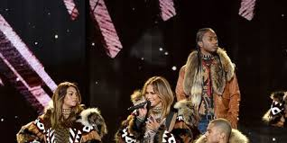

El concepto de apropiación cultural no es el más peligroso de los que surgen de las políticas de la identidad, pero quizá sea el más empobrecedor.
Los editores de la revista The Nation pidieron disculpas por publicar un poema que utiliza rasgos dialectales asociados a los negros. Scarlett Johansson recibió críticas porque iba a interpretar a una transexual. La actriz Ruby Rose sufrió un escrache en Twitter porque pretendía encarnar al personaje de Batwoman, pero al parecer no era lo bastante judía ni lesbiana para hacerlo. Otros protestaban porque Disney ha escogido a un heterosexual para interpretar a un personaje gay. En España, la cantante Rosalía ha sido acusada de apropiarse de la cultura gitana.
